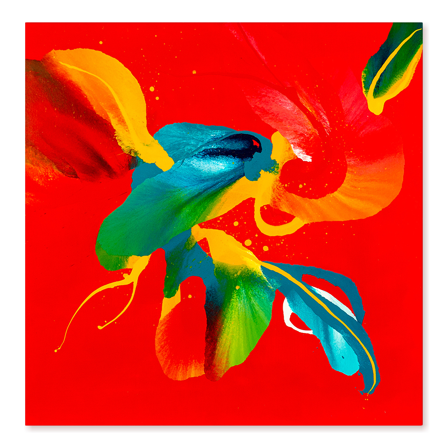

Red
Exploring red
"Red - colour of blood, sacrifice, danger, courage, heat, activity, passion, sexuality, anger, love, and joy."
Is a colour I always avoided. I resented it. I was a weird kid, that was usually pick on both at home and school. So when I was asked to sing a solo at school or signing competitions along with other kids in band I always made sure I was not in the spotlight – fortunately a friend of mine who was also singing a solo, was very happy to be in the front row making it for me a lot easier to blend in the crowd. I was too afraid that people will pick on me and too afraid to fail. And red is a colour of visibility. It makes you shine more than gold.

Primary colours
I am not an art historian and there are much better sources of information that my blog posts, but I will mention few names (Mantegna, Fouqet, Malevich, Mondrain) and few works as it is difficult for me not the same when thinking of gold not thinking of Klimt.
Red as being one of the three primary colours is obviously an integral part of almost any colour palette. It is used to warm up colour by creating a different shade or to create entirely different colour. It is a colour that makes you feel hungry. It is a colour that can suck the air out of your lungs and will leave you breathless. It will grab your attention by force and will imprison you. Just like it did with Kazimir Malevich. His most famous work “Painterly Realism of a Peasant Woman in Two Dimensions” is most commonly known as “Red square”. It is a painting that you just cannot ignore and just simply pass by. It is impossible. This paintings is so brutal in it’s simplicity that will stay with you forever like an imprint.
(But it's in a russian museum so I do recommend to seeing it in person - internet only - sorry. F**k russian government - Slava Ukrainie!).
Shades
But there are so many different shades of red - crimson, mahogany, maroon, carmine… And some shades are more space taking than others.
Jean Fouqet’s “Madonna surrounded by Seraphim and Cherubim” red used for the seraphines and cherubins. It is a panting of contrast. The red against the blue, almost white silhouette of Madonna with the child against red. Red in this panting is a red giving space instead taking it. It makes the Madonna to stand out from the background of monochromatic cherubins. As it is a panting from 15th century, we need to remember that red was as well as blue were royal colours and symbolism was still quite strong at the time. So the colour was not only used here because of it’s artistic values but also hold a purpose.
Back to the roots
Piet Mondrian’s “Composition with red, blue and yellow” is like bringing all the history of painting back to it’s beginning. It is almost like making the whole circle and going back to the primary colours. Simplicity in the purest form. And red is playing the first violin in this composition. It is again a colour of expansion, a colour of statement.
But these reds were serving some purposes and I would say that they did not move any emotional string in me. I can admire them, I can relate, I can understand the use and I can be breathless. But even with Malevich Red Square - this is not emotional for me – I am shocked but not moved. The one that has changed something in me, changed my optics and colour attachment is Ismael Lagares exhibited in Lanford Gallery.
Rediscovering
His bright red, intensive, vibrant red canvases with smaller, contrasting colour forms attached to the canvases took me by surprise and left a mark in me. They made me redefine my relationship with red. They made me redefine what I thought about red. And made me thought that red indeed can be joyful, playful full of life. And it made me experiment. And I developed new work I would never thought I could.
